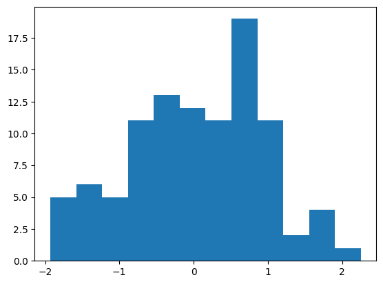
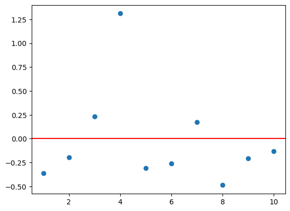
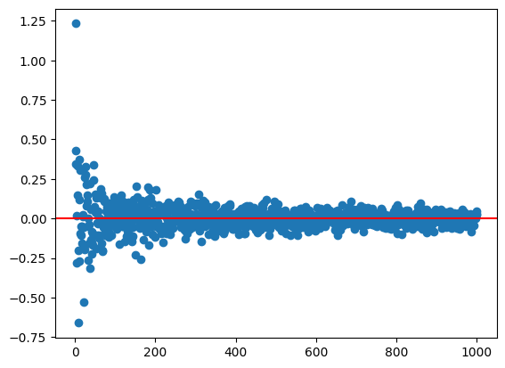

[1, "a", 3, 60][1, 'a', 3, 60]
Create a list!
[1, "a", 3, 60][1, 'a', 3, 60]Save this as an object!
myList = [1, "a", 3, 60]
print(myList)
myList[1, 'a', 3, 60][1, 'a', 3, 60]myList + [2, 4, 5][1, 'a', 3, 60, 2, 4, 5]myList * 4[1, 'a', 3, 60, 1, 'a', 3, 60, 1, 'a', 3, 60, 1, 'a', 3, 60]We’ll add some HTML widgets and play around with that.
#reading in modules
import numpy as np
import matplotlib.pyplot as plt
import ipywidgets as widgetsLet’s generate 100 random data values using numpy.
rng = np.random.default_rng(12)
vals = rng.standard_normal(100)
valsarray([-6.82677987e-03, 1.04614329e+00, 7.41588421e-01, 7.23956542e-01,
1.61877622e+00, -1.20555814e+00, -6.26955471e-01, -1.32066321e+00,
-1.07752508e-01, 9.98763655e-01, -2.19478863e-02, 4.95880066e-01,
-1.91076866e+00, 1.47064166e-01, -9.06943251e-01, 1.77538939e+00,
8.86849076e-01, 9.49349483e-01, -5.78549625e-02, 6.12862274e-01,
6.57890162e-01, -3.44402666e-01, -4.97372035e-01, -1.14772783e-01,
-6.05452009e-01, -5.94339418e-01, -2.83375376e-01, -7.28417727e-01,
7.66327786e-01, -1.59608633e+00, 8.23562129e-01, -6.25566470e-01,
-5.45939956e-01, -1.35084714e+00, -1.44242119e-01, -2.47661509e-01,
1.91455831e-01, -5.33774296e-01, 9.37561793e-02, 1.81969184e+00,
4.08999694e-01, -5.73690037e-01, 9.53109595e-01, -1.28801134e-01,
5.93874468e-01, 6.12747429e-01, -3.91065717e-01, -1.93028750e+00,
-3.47653623e-01, 5.51455424e-01, -3.80110407e-01, 4.38969315e-01,
9.79540372e-01, -5.44113415e-01, 1.23135175e+00, 1.62180446e+00,
1.07904594e+00, 1.16546284e+00, 1.09679645e+00, 2.25453906e+00,
1.85860905e-01, 2.08408285e-03, 6.03107305e-01, -9.08195119e-01,
-1.55317676e+00, -8.82007973e-01, 3.72565350e-01, 4.73053341e-01,
-1.53635872e+00, -1.88346371e+00, -3.16142243e-01, -1.88056516e-01,
-4.92008330e-02, 6.71362447e-01, 1.22883418e+00, 2.30896430e-01,
6.12684704e-01, -1.09520169e+00, -1.17630801e+00, 2.36238334e-01,
6.64663103e-01, 7.26243456e-01, 5.92741991e-01, 7.84173709e-01,
8.09828030e-01, -1.75218536e+00, -7.34165769e-01, 4.55159742e-01,
5.96671965e-01, -1.51209241e+00, 1.17306137e+00, -4.38831924e-01,
-2.32424749e-01, 2.73818645e-01, 7.49635232e-01, -1.43311699e+00,
9.89912577e-01, 7.72934677e-02, -7.70813495e-01, -2.75273142e-01])plt.hist(vals)(array([ 8., 6., 6., 17., 15., 12., 24., 7., 4., 1.]),
array([-1.9302875 , -1.51180484, -1.09332219, -0.67483953, -0.25635687,
0.16212578, 0.58060844, 0.99909109, 1.41757375, 1.8360564 ,
2.25453906]),
<BarContainer object of 10 artists>)plt.hist(vals, bins = 12)(array([ 5., 6., 5., 11., 13., 12., 11., 19., 11., 2., 4., 1.]),
array([-1.9302875 , -1.58155195, -1.2328164 , -0.88408086, -0.53534531,
-0.18660976, 0.16212578, 0.51086133, 0.85959687, 1.20833242,
1.55706797, 1.90580351, 2.25453906]),
<BarContainer object of 12 artists>)
def myPlot(bins):
plt.hist(vals, bins)
myPlot(4)widgets.interactive(myPlot, bins =(1,20))
Here we’ll look at some quick string methods and functions including string formatting!
One way to do formatting is to use {} within a string and then use the .format() method. Let’s create a string that we can place values into. Something like this:
“The probability of being less than or equal to 2 for a normal distribution with mean 4 and standard deviation 1 is …”
prob_string = "The probability of being less than or equal to {0} for a normal distribution with mean {1} and standard deviation {2} is {3}"mean = 1
std = 2
y = 1.55'The probability of being less than or equal to 1.55 for a normal distribution with mean 1 and standard deviation 2 is 0.6083'Now pull the scipy.stats stuff from above and insert the numbers using the .format() method.
import scipy.stats as stats
stats.norm.cdf(y, mean, std)0.6083418808463948prob_string.format(y, mean, std, round(stats.norm.cdf(y, mean, std), 4))'The probability of being less than or equal to 1.55 for a normal distribution with mean 1 and standard deviation 2 is 0.6083'First we need a string of text to break up. Project Gutenberg has some classic open works that you can get the entire text from. Here we’ll pull from a cookbook called Practical Vegetarian Cookery. We’ll just grab two recipes:
WINTER VEGETABLE PIE.
Place in baking dish, slices of cold boiled potatoes, onions, celery, and carrot, then add one scant cupful of stewed tomatoes and one half can of peas. Cover with stock, thickened to a gravy with butter and flour, cover with plain crust, and bake. A pie of this nature can be made with a great variety of ingredients; apples, boiled chestnuts, onions, and potatoes make a good combination. Rice, with a grating of cheese, celery, onion, and tomato, another variety.
VEGETABLE HASH.
Of cooked and chopped vegetables, use one carrot, one blood beet, two turnips, two quarts of finely sliced potatoes, one onion, and a stalk of celery; one sprig of parsley; put them in a stew pan, cover tight, and set in the oven. When thoroughly heated pour over a gravy of drawn butter and cream. Stir together and serve.
Let’s create a string with these and count variables that occur.
recipe = """
WINTER VEGETABLE PIE.
Place in baking dish, slices of cold boiled potatoes, onions, celery,
and carrot, then add one scant cupful of stewed tomatoes and one half
can of peas. Cover with stock, thickened to a gravy with butter and
flour, cover with plain crust, and bake. A pie of this nature can be
made with a great variety of ingredients; apples, boiled chestnuts,
onions, and potatoes make a good combination. Rice, with a grating of
cheese, celery, onion, and tomato, another variety.
VEGETABLE HASH.
Of cooked and chopped vegetables, use one carrot, one blood beet, two
turnips, two quarts of finely sliced potatoes, one onion, and a stalk
of celery; one sprig of parsley; put them in a stew pan, cover tight,
and set in the oven. When thoroughly heated pour over a gravy of drawn
butter and cream. Stir together and serve.
"""
recipe'\nWINTER VEGETABLE PIE.\n\nPlace in baking dish, slices of cold boiled potatoes, onions, celery,\nand carrot, then add one scant cupful of stewed tomatoes and one half\ncan of peas. Cover with stock, thickened to a gravy with butter and\nflour, cover with plain crust, and bake. A pie of this nature can be\nmade with a great variety of ingredients; apples, boiled chestnuts,\nonions, and potatoes make a good combination. Rice, with a grating of\ncheese, celery, onion, and tomato, another variety.\n\nVEGETABLE HASH.\n\nOf cooked and chopped vegetables, use one carrot, one blood beet, two\nturnips, two quarts of finely sliced potatoes, one onion, and a stalk\nof celery; one sprig of parsley; put them in a stew pan, cover tight,\nand set in the oven. When thoroughly heated pour over a gravy of drawn\nbutter and cream. Stir together and serve.\n'Replace the \n, ,, and . values with a space instead. Lowercase everything with the .lower() method and then .strip() to remove the excess whitespace. Finally, the .split() method gives us a list with each element being a word from the document.
recipe_split = recipe.replace("\n", " ") \
.replace(".", " ") \
.replace(",", " ") \
.replace(";", " ") \
.lower() \
.strip() \
.split(" ")Now we can see how often different words come up.
type(recipe_split)
recipe_split.count("potatoes")3Remember that things can’t be stored precisely so you may sometimes run into issues where two things should be equal but don’t resolve as equal.
from math import sqrt
sqrt(2)**2 == 2FalseUse the isclose() from numpy to check things like this.
import numpy as np
np.isclose(sqrt(2)**2, 2)TrueWe should have an idea about inf, -inf, and nan values in python. nan values can be returned when a mathematical function is used outside of its domain for instance. Here is the norm.ppf() function. This returns the value from the standard normal with a certain proportion of the distribution to the left of it (proportion specified by the value you feed the function). These values should of course be between 0 and 1.
import scipy.stats as stats
stats.norm.ppf(0.5)0.0nanWhat happens if we give a value like -1?
stats.norm.ppf(-0.1)
np.isnan(stats.norm.ppf(-0.1))TrueInfinite values can pop up too. There are lots of ways to create an infinite value via casting as well.
float(1)
float("Inf")
-float("Inf")-infLet’s update our string from before with digits! (Note that using floating point for z and integers for mean and standard deviation doesn’t really make sense, I’m just showing the functionality!)
prob_string = "The probability of being less than or equal to {y:.2f} for a normal distribution with mean {mean:d} and standard deviation {std:d} is {prob:.4f}"
prob_string.format(y = y, mean = mean, std = std, prob = stats.norm.cdf(y, mean, std))'The probability of being less than or equal to 1.55 for a normal distribution with mean 1 and standard deviation 2 is 0.6083'Let’s create our own plotting function that will plot a Binomial random variables probabilities with a Normal approximation overlay.
If you aren’t familiar, a Binomial random variable measures the number of successes in a fixed number of Success/Failure trials (denoted by \(n\)). These trials need to be indpendent and have the same probability of success (called \(p\)).
We denote this via \[Y\sim Bin(n, p)\] As \(Y\) measures the number of successes in \(n\) trials, the values \(Y\) can take on are \(y = 0, 1, 2, ..., n\). The probabilities associated with each of these outcomes is given by the Probability Mass Function (PMF) of the Binomial distribution:
\[p_Y(y)= P(Y=y) = \binom{n}{y}p^y(1-p)^{n-y}\]
where \(\binom{n}{y} = \frac{n!}{y!(n-y)!}\) is the binomial coefficient.
We can find these values using the scipy.stats module! Let’s read in the appropriate modules for finding these values and doing our plotting.
import numpy as np
import scipy.stats as stats
import matplotlib.pyplot as pltWhen writing a function, it is usually easier to write the code for the body of the function outside of a function definition first and then put it into a function.
Let’s start by creating code to find the probabilities associated with the Binomial for a given \(n\) and \(p\). The scipy.stats module has a binom.pmf() function that will return probabilities from the PMF.
print(stats.binom.pmf.__doc__)Probability mass function at k of the given RV.
Parameters
----------
k : array_like
Quantiles.
arg1, arg2, arg3,... : array_like
The shape parameter(s) for the distribution (see docstring of the
instance object for more information)
loc : array_like, optional
Location parameter (default=0).
Returns
-------
pmf : array_like
Probability mass function evaluated at k
Note: the k argument can be ‘array like’. That is, we can pass something like a list of values we want the probabilities for. As a binomial measures the number of successes in \(n\) trials, we need to consider all of the integers from 0 to n. This can be done easily with the range() function.
stats.binom.pmf(0, n = 10, p = 0.5)0.0009765624999999989stats.binom.pmf([0,1,2], n = 10, p = 0.5)array([0.00097656, 0.00976563, 0.04394531])Ok, we have the values of the random variable (0 to \(n\)) and the probabilities we want to plot. We can use matplotlib’s pyplot module which has a bar() function that can create a basic bar graph for us. It has two arguments:
x values for the location of the barsheight for the height of the barsWe just need to pass two things of the same length that correspond to the pairs of x and height.
n = 30
p = 0.5
plt.bar(x = range(n+1), height = stats.binom.pmf(range(n+1), n = n, p = p))Great! Now let’s wrap that up into a function so the user can call it and just specify n and p. We’ll give default values of n=30 and p=0.5.
def binom_norm_plot(n = 30, p = 0.5):
plt.bar(x = range(n+1), height = stats.binom.pmf(range(n+1), n = n, p = p))
return Nonebinom_norm_plot()
binom_norm_plot(n= 10, p = 0.1)Now we are cooking! We want to add a curve to this graph corresponding to the commonly used Normal approximation to the binomial.
The Normal distribution has two parameters: mean and standard deviation (or variance)
The mean of the Binomial is \(n*p\) and the standard deviation is \(\sqrt{n*p*(1-p)}\). We can plug these values into the norm.pdf() from the scipy.stats module (PDF stands for Probability Density Function and is the continuous analog to the PMF).
print(stats.norm.pdf.__doc__)Probability density function at x of the given RV.
Parameters
----------
x : array_like
quantiles
arg1, arg2, arg3,... : array_like
The shape parameter(s) for the distribution (see docstring of the
instance object for more information)
loc : array_like, optional
location parameter (default=0)
scale : array_like, optional
scale parameter (default=1)
Returns
-------
pdf : ndarray
Probability density function evaluated at x
stats.norm.pdf(0, loc = 0, scale =1)0.3989422804014327import math
stats.norm.pdf(range(31), loc = n*p, scale = math.sqrt(n*p*(1-p)))array([4.45617467e-08, 3.08033680e-07, 1.86349517e-06, 9.86625663e-06,
4.57162515e-05, 1.85388542e-04, 6.57944456e-04, 2.04357059e-03,
5.55500081e-03, 1.32151677e-02, 2.75140991e-02, 5.01339573e-02,
7.99471056e-02, 1.11575174e-01, 1.36278225e-01, 1.45673124e-01,
1.36278225e-01, 1.11575174e-01, 7.99471056e-02, 5.01339573e-02,
2.75140991e-02, 1.32151677e-02, 5.55500081e-03, 2.04357059e-03,
6.57944456e-04, 1.85388542e-04, 4.57162515e-05, 9.86625663e-06,
1.86349517e-06, 3.08033680e-07, 4.45617467e-08])Great, now let’s add those values to the plot using the plot() function from pyplot. We’ll learn about this later but if we use matplotlib and create a plot in a cell followed by another plot, it will place those on the same plot by default. Therefore, we just want to create the bar plot and then this other plot in the same cell.
print(plt.plot.__doc__)Plot y versus x as lines and/or markers.
Call signatures::
plot([x], y, [fmt], *, data=None, **kwargs)
plot([x], y, [fmt], [x2], y2, [fmt2], ..., **kwargs)
The coordinates of the points or line nodes are given by *x*, *y*.
The optional parameter *fmt* is a convenient way for defining basic
formatting like color, marker and linestyle. It's a shortcut string
notation described in the *Notes* section below.
>>> plot(x, y) # plot x and y using default line style and color
>>> plot(x, y, 'bo') # plot x and y using blue circle markers
>>> plot(y) # plot y using x as index array 0..N-1
>>> plot(y, 'r+') # ditto, but with red plusses
You can use `.Line2D` properties as keyword arguments for more
control on the appearance. Line properties and *fmt* can be mixed.
The following two calls yield identical results:
>>> plot(x, y, 'go--', linewidth=2, markersize=12)
>>> plot(x, y, color='green', marker='o', linestyle='dashed',
... linewidth=2, markersize=12)
When conflicting with *fmt*, keyword arguments take precedence.
**Plotting labelled data**
There's a convenient way for plotting objects with labelled data (i.e.
data that can be accessed by index ``obj['y']``). Instead of giving
the data in *x* and *y*, you can provide the object in the *data*
parameter and just give the labels for *x* and *y*::
>>> plot('xlabel', 'ylabel', data=obj)
All indexable objects are supported. This could e.g. be a `dict`, a
`pandas.DataFrame` or a structured numpy array.
**Plotting multiple sets of data**
There are various ways to plot multiple sets of data.
- The most straight forward way is just to call `plot` multiple times.
Example:
>>> plot(x1, y1, 'bo')
>>> plot(x2, y2, 'go')
- If *x* and/or *y* are 2D arrays a separate data set will be drawn
for every column. If both *x* and *y* are 2D, they must have the
same shape. If only one of them is 2D with shape (N, m) the other
must have length N and will be used for every data set m.
Example:
>>> x = [1, 2, 3]
>>> y = np.array([[1, 2], [3, 4], [5, 6]])
>>> plot(x, y)
is equivalent to:
>>> for col in range(y.shape[1]):
... plot(x, y[:, col])
- The third way is to specify multiple sets of *[x]*, *y*, *[fmt]*
groups::
>>> plot(x1, y1, 'g^', x2, y2, 'g-')
In this case, any additional keyword argument applies to all
datasets. Also, this syntax cannot be combined with the *data*
parameter.
By default, each line is assigned a different style specified by a
'style cycle'. The *fmt* and line property parameters are only
necessary if you want explicit deviations from these defaults.
Alternatively, you can also change the style cycle using
:rc:`axes.prop_cycle`.
Parameters
----------
x, y : array-like or scalar
The horizontal / vertical coordinates of the data points.
*x* values are optional and default to ``range(len(y))``.
Commonly, these parameters are 1D arrays.
They can also be scalars, or two-dimensional (in that case, the
columns represent separate data sets).
These arguments cannot be passed as keywords.
fmt : str, optional
A format string, e.g. 'ro' for red circles. See the *Notes*
section for a full description of the format strings.
Format strings are just an abbreviation for quickly setting
basic line properties. All of these and more can also be
controlled by keyword arguments.
This argument cannot be passed as keyword.
data : indexable object, optional
An object with labelled data. If given, provide the label names to
plot in *x* and *y*.
.. note::
Technically there's a slight ambiguity in calls where the
second label is a valid *fmt*. ``plot('n', 'o', data=obj)``
could be ``plt(x, y)`` or ``plt(y, fmt)``. In such cases,
the former interpretation is chosen, but a warning is issued.
You may suppress the warning by adding an empty format string
``plot('n', 'o', '', data=obj)``.
Returns
-------
list of `.Line2D`
A list of lines representing the plotted data.
Other Parameters
----------------
scalex, scaley : bool, default: True
These parameters determine if the view limits are adapted to the
data limits. The values are passed on to
`~.axes.Axes.autoscale_view`.
**kwargs : `.Line2D` properties, optional
*kwargs* are used to specify properties like a line label (for
auto legends), linewidth, antialiasing, marker face color.
Example::
>>> plot([1, 2, 3], [1, 2, 3], 'go-', label='line 1', linewidth=2)
>>> plot([1, 2, 3], [1, 4, 9], 'rs', label='line 2')
If you specify multiple lines with one plot call, the kwargs apply
to all those lines. In case the label object is iterable, each
element is used as labels for each set of data.
Here is a list of available `.Line2D` properties:
Properties:
agg_filter: a filter function, which takes a (m, n, 3) float array and a dpi value, and returns a (m, n, 3) array and two offsets from the bottom left corner of the image
alpha: scalar or None
animated: bool
antialiased or aa: bool
clip_box: `.Bbox`
clip_on: bool
clip_path: Patch or (Path, Transform) or None
color or c: color
dash_capstyle: `.CapStyle` or {'butt', 'projecting', 'round'}
dash_joinstyle: `.JoinStyle` or {'miter', 'round', 'bevel'}
dashes: sequence of floats (on/off ink in points) or (None, None)
data: (2, N) array or two 1D arrays
drawstyle or ds: {'default', 'steps', 'steps-pre', 'steps-mid', 'steps-post'}, default: 'default'
figure: `.Figure`
fillstyle: {'full', 'left', 'right', 'bottom', 'top', 'none'}
gapcolor: color or None
gid: str
in_layout: bool
label: object
linestyle or ls: {'-', '--', '-.', ':', '', (offset, on-off-seq), ...}
linewidth or lw: float
marker: marker style string, `~.path.Path` or `~.markers.MarkerStyle`
markeredgecolor or mec: color
markeredgewidth or mew: float
markerfacecolor or mfc: color
markerfacecoloralt or mfcalt: color
markersize or ms: float
markevery: None or int or (int, int) or slice or list[int] or float or (float, float) or list[bool]
mouseover: bool
path_effects: `.AbstractPathEffect`
picker: float or callable[[Artist, Event], tuple[bool, dict]]
pickradius: unknown
rasterized: bool
sketch_params: (scale: float, length: float, randomness: float)
snap: bool or None
solid_capstyle: `.CapStyle` or {'butt', 'projecting', 'round'}
solid_joinstyle: `.JoinStyle` or {'miter', 'round', 'bevel'}
transform: unknown
url: str
visible: bool
xdata: 1D array
ydata: 1D array
zorder: float
See Also
--------
scatter : XY scatter plot with markers of varying size and/or color (
sometimes also called bubble chart).
Notes
-----
**Format Strings**
A format string consists of a part for color, marker and line::
fmt = '[marker][line][color]'
Each of them is optional. If not provided, the value from the style
cycle is used. Exception: If ``line`` is given, but no ``marker``,
the data will be a line without markers.
Other combinations such as ``[color][marker][line]`` are also
supported, but note that their parsing may be ambiguous.
**Markers**
============= ===============================
character description
============= ===============================
``'.'`` point marker
``','`` pixel marker
``'o'`` circle marker
``'v'`` triangle_down marker
``'^'`` triangle_up marker
``'<'`` triangle_left marker
``'>'`` triangle_right marker
``'1'`` tri_down marker
``'2'`` tri_up marker
``'3'`` tri_left marker
``'4'`` tri_right marker
``'8'`` octagon marker
``'s'`` square marker
``'p'`` pentagon marker
``'P'`` plus (filled) marker
``'*'`` star marker
``'h'`` hexagon1 marker
``'H'`` hexagon2 marker
``'+'`` plus marker
``'x'`` x marker
``'X'`` x (filled) marker
``'D'`` diamond marker
``'d'`` thin_diamond marker
``'|'`` vline marker
``'_'`` hline marker
============= ===============================
**Line Styles**
============= ===============================
character description
============= ===============================
``'-'`` solid line style
``'--'`` dashed line style
``'-.'`` dash-dot line style
``':'`` dotted line style
============= ===============================
Example format strings::
'b' # blue markers with default shape
'or' # red circles
'-g' # green solid line
'--' # dashed line with default color
'^k:' # black triangle_up markers connected by a dotted line
**Colors**
The supported color abbreviations are the single letter codes
============= ===============================
character color
============= ===============================
``'b'`` blue
``'g'`` green
``'r'`` red
``'c'`` cyan
``'m'`` magenta
``'y'`` yellow
``'k'`` black
``'w'`` white
============= ===============================
and the ``'CN'`` colors that index into the default property cycle.
If the color is the only part of the format string, you can
additionally use any `matplotlib.colors` spec, e.g. full names
(``'green'``) or hex strings (``'#008000'``).binom_norm_plot(n = 30, p = 0.5)
n = 30
p = 0.5
plt.plot(range(n+1), stats.norm.pdf(range(n+1), loc = n*p, scale = math.sqrt(n*p*(1-p))))Add that to the function!
def binom_norm_plot(n = 30, p = 0.5):
plt.bar(x = range(n+1), height = stats.binom.pmf(range(n+1), n = n, p = p))
plt.plot(range(n+1), stats.norm.pdf(range(n+1), loc = n*p, scale = math.sqrt(n*p*(1-p))))
return Nonebinom_norm_plot()
binom_norm_plot(n= 100, p = 0.2)for loop and if/then/elseFirst, let’s do an if/then/else logic example. Fizz buzz coding!
The logic for the fizz buzz programming problem: - If a number is divisible by 15 (both 3 and 5), then print fizz buzz - If a number is only divisible by 3, then print fizz - If a number is only divisible by 5, then print buzz - Otherwise print the number itself
We can use the % (modulus operator) to get the remainder from a division calculation.
10 % 3111 % 3212 % 30Let’s use if/then/else logic to go through and print the correct statement.
value = 45
if ((value % 5) == 0) and ((value % 3) == 0):
print("fizz buzz")
elif (value % 3) == 0:
print("fizz")
elif (value % 5) == 0:
print("buzz")
else:
print(value)fizz buzzNow wrap it in a for loop to test all numbers between 1 and 100.
for value in range(1, 101):
if ((value % 5) == 0) and ((value % 3) == 0):
print("fizz buzz")
elif (value % 3) == 0:
print("fizz")
elif (value % 5) == 0:
print("buzz")
else:
print(value)1
2
fizz
4
buzz
fizz
7
8
fizz
buzz
11
fizz
13
14
fizz buzz
16
17
fizz
19
buzz
fizz
22
23
fizz
buzz
26
fizz
28
29
fizz buzz
31
32
fizz
34
buzz
fizz
37
38
fizz
buzz
41
fizz
43
44
fizz buzz
46
47
fizz
49
buzz
fizz
52
53
fizz
buzz
56
fizz
58
59
fizz buzz
61
62
fizz
64
buzz
fizz
67
68
fizz
buzz
71
fizz
73
74
fizz buzz
76
77
fizz
79
buzz
fizz
82
83
fizz
buzz
86
fizz
88
89
fizz buzz
91
92
fizz
94
buzz
fizz
97
98
fizz
buzzwhile loop ExampleLet’s do a quick interactive number guessing game. We’ll use the input function to ask the user for an input.
A while loop allows us to keep executing until the user guesses correctly and we update the condition.
input("give me a value ")give me a value 514kjdaf'514kjdaf'truth = 18
correct = False
while not correct:
guess = int(input("Give me an integer value between 1 and 20: "))
if guess == truth:
print("Way to go!")
correct = True
elif guess < truth:
print("Something larger")
elif guess > truth:
print("something smaller")Give me an integer value between 1 and 20: 1
Something larger
Give me an integer value between 1 and 20: 20
something smaller
Give me an integer value between 1 and 20: 19
something smaller
Give me an integer value between 1 and 20: 18
Way to go!List comprehensions can be confusing at first. Let’s do a little practice. First, let’s write a list comprehension to return a list with values 0, 1, …, 9.
list(range(10))[0, 1, 2, 3, 4, 5, 6, 7, 8, 9][x for x in range(10)][0, 1, 2, 3, 4, 5, 6, 7, 8, 9]Ok, that is a bit silly but we can do more with this. For instance, we can return \(x^2\) instead of just \(x\).
[x**2 for x in range(10)][0, 1, 4, 9, 16, 25, 36, 49, 64, 81]We can also return more than one value if we return a list! Let’s return \(x\), \(x+1\), and \(x+2\).
[[x, x+1, x+2] for x in range(10)][[0, 1, 2],
[1, 2, 3],
[2, 3, 4],
[3, 4, 5],
[4, 5, 6],
[5, 6, 7],
[6, 7, 8],
[7, 8, 9],
[8, 9, 10],
[9, 10, 11]]:Next we’ll consider the map() function, which allows us to apply a function to every element of list (along with other things we’ll look at later!).
Consider applying the sum() function to the first (0th) and second (1st) elements of our list. This should sum the subsequent lists.
y = [[x, x+1, x+2] for x in range(10)]y[0][0, 1, 2]sum(y[0])3To do this to every list element would be tedious. Instead we can map() the sum() function to each element.
map(sum, y)<map at 0x7d5be5260b20>This doesn’t actually return the values! Instead this is an iterator that allows us to find the values when needed.
An easy way to get at these is to just wrap the map in a list().
z = list(map(sum, y))
z[3, 6, 9, 12, 15, 18, 21, 24, 27, 30]Next we consider the zip() function, which is quite useful for looking at multiple lists (and other data structures) at once. Here we have two lists of the same length, which we can check with the code below.
print((len(z), len(y)))
zip(z, y)(10, 10)<zip at 0x7d5be521bb80>Now we can write a for loop to iterate over the 0th (first) element of each list at the same time, then the 1st (second) element, …, etc.
for i, j in zip(z, y):
print(i, j)3 [0, 1, 2]
6 [1, 2, 3]
9 [2, 3, 4]
12 [3, 4, 5]
15 [4, 5, 6]
18 [5, 6, 7]
21 [6, 7, 8]
24 [7, 8, 9]
27 [8, 9, 10]
30 [9, 10, 11]This can be done via a list comprehension as well!
[[i,j] for i, j in zip(z,y)][[3, [0, 1, 2]],
[6, [1, 2, 3]],
[9, [2, 3, 4]],
[12, [3, 4, 5]],
[15, [4, 5, 6]],
[18, [5, 6, 7]],
[21, [6, 7, 8]],
[24, [7, 8, 9]],
[27, [8, 9, 10]],
[30, [9, 10, 11]]][[i,j] for i, j in zip(z,y) if i >12][[15, [4, 5, 6]],
[18, [5, 6, 7]],
[21, [6, 7, 8]],
[24, [7, 8, 9]],
[27, [8, 9, 10]],
[30, [9, 10, 11]]]Let’s construct a dictionary from a tuple and a list. The tuple will act as the keys for our dictionary and the list as the values corresponding to those keys. (We could use lists for both!)
keys = tuple(x for x in "abcdef")
keys('a', 'b', 'c', 'd', 'e', 'f')Now we’ll use another list comprehension to return a list where each element is a list itself of length four based on different mathematical functions.
import math
values = [[x, pow(x, 3), math.exp(x), x + 10] for x in range(10, 16)]
values[[10, 1000, 22026.465794806718, 20],
[11, 1331, 59874.14171519782, 21],
[12, 1728, 162754.79141900392, 22],
[13, 2197, 442413.3920089205, 23],
[14, 2744, 1202604.2841647768, 24],
[15, 3375, 3269017.3724721107, 25]]Using the zip() function on the tuple an dlist, we can easily create a dictionary using the dict() function.
my_dict = dict(zip(keys, values))
my_dict{'a': [10, 1000, 22026.465794806718, 20],
'b': [11, 1331, 59874.14171519782, 21],
'c': [12, 1728, 162754.79141900392, 22],
'd': [13, 2197, 442413.3920089205, 23],
'e': [14, 2744, 1202604.2841647768, 24],
'f': [15, 3375, 3269017.3724721107, 25]}my_dict["a"][10, 1000, 22026.465794806718, 20]What happens if we convert this dictionary into a list?
list(my_dict)['a', 'b', 'c', 'd', 'e', 'f']list(my_dict.values())[[10, 1000, 22026.465794806718, 20],
[11, 1331, 59874.14171519782, 21],
[12, 1728, 162754.79141900392, 22],
[13, 2197, 442413.3920089205, 23],
[14, 2744, 1202604.2841647768, 24],
[15, 3375, 3269017.3724721107, 25]]list(zip(list(my_dict), list(my_dict.values())))[('a', [10, 1000, 22026.465794806718, 20]),
('b', [11, 1331, 59874.14171519782, 21]),
('c', [12, 1728, 162754.79141900392, 22]),
('d', [13, 2197, 442413.3920089205, 23]),
('e', [14, 2744, 1202604.2841647768, 24]),
('f', [15, 3375, 3269017.3724721107, 25])]We can use any immutable object as our keys. Below we’ll use a tuple as one of our keys and see how to reference that key.
my_dict[(1, "this")] = "this is a string"my_dict{'a': [10, 1000, 22026.465794806718, 20],
'b': [11, 1331, 59874.14171519782, 21],
'c': [12, 1728, 162754.79141900392, 22],
'd': [13, 2197, 442413.3920089205, 23],
'e': [14, 2744, 1202604.2841647768, 24],
'f': [15, 3375, 3269017.3724721107, 25],
(1, 'this'): 'this is a string'}A really useful operator is the in operator. This easily allows us to see if a key exists in a dictionary.
"a" in my_dictTrue"o" in my_dictFalse"o" not in my_dictTrueNumPyWe’ll load in the numpy module and create a two-dimensional array using random values from a standard normal distribution.
import numpy as np
rng = np.random.default_rng(10)
values = rng.standard_normal(30)
valuesarray([-1.10333845, -0.72502464, -0.78180526, 0.26697586, -0.24858073,
0.12648305, 0.84304257, 0.85793655, 0.47518364, -0.4507686 ,
-0.75493228, -0.81481411, -0.34385486, -0.05138009, -0.97227368,
-1.13448753, 0.30570522, -1.85168503, -0.17705351, 0.42582567,
-0.98535561, -1.11295413, -0.76062603, 0.64802459, -0.12983136,
-1.86959723, -0.42334911, 1.0138968 , 0.98371534, 0.63004195])values.shape(30,)values.reshape((15, 2))array([[-1.10333845, -0.72502464],
[-0.78180526, 0.26697586],
[-0.24858073, 0.12648305],
[ 0.84304257, 0.85793655],
[ 0.47518364, -0.4507686 ],
[-0.75493228, -0.81481411],
[-0.34385486, -0.05138009],
[-0.97227368, -1.13448753],
[ 0.30570522, -1.85168503],
[-0.17705351, 0.42582567],
[-0.98535561, -1.11295413],
[-0.76062603, 0.64802459],
[-0.12983136, -1.86959723],
[-0.42334911, 1.0138968 ],
[ 0.98371534, 0.63004195]])values.reshape((15, 2)).shape(15, 2)my_array = values.reshape((15,2))
my_array.basearray([-1.10333845, -0.72502464, -0.78180526, 0.26697586, -0.24858073,
0.12648305, 0.84304257, 0.85793655, 0.47518364, -0.4507686 ,
-0.75493228, -0.81481411, -0.34385486, -0.05138009, -0.97227368,
-1.13448753, 0.30570522, -1.85168503, -0.17705351, 0.42582567,
-0.98535561, -1.11295413, -0.76062603, 0.64802459, -0.12983136,
-1.86959723, -0.42334911, 1.0138968 , 0.98371534, 0.63004195])We can iterate over values in an array using nditer(). Be careful here: the iteration doesn’t always go through the values in the same pattern as it relies on the memory layout of the array. You can change this behavior though. See https://numpy.org/doc/stable/reference/arrays.nditer.html#arrays-nditer for a discussion and information on how to specify the order.
for i in np.nditer(my_array):
print(math.exp(i))0.33176166344167046
0.4843126352266208
0.45757921701143867
1.306008914185862
0.7799068968474736
1.1348302173565885
2.3234254197779323
2.3582894560408887
1.6083095234626505
0.6371382601360868
0.4700424440698853
0.44272161841215146
0.709031831025442
0.9499175441491969
0.3782221046899628
0.3215868817920055
1.3575820587101297
0.15697244006051864
0.8377349576565134
1.5308538739450661
0.37330645316600336
0.32858683744892436
0.4673737442809796
1.911760583275141
0.8782435285725788
0.1541857502671811
0.6548499786487098
2.7563209456441498
2.6743740273453316
1.877689348050752Many of the functions we’ll apply to arrays are ufuncs or universal functions. These act on an array without requiring the use of explicit looping. They tend to be computationally superior to looping so their use is encouraged! Here we apply the \(e\) function to each element of our array y.
np.exp(my_array)array([[0.33176166, 0.48431264],
[0.45757922, 1.30600891],
[0.7799069 , 1.13483022],
[2.32342542, 2.35828946],
[1.60830952, 0.63713826],
[0.47004244, 0.44272162],
[0.70903183, 0.94991754],
[0.3782221 , 0.32158688],
[1.35758206, 0.15697244],
[0.83773496, 1.53085387],
[0.37330645, 0.32858684],
[0.46737374, 1.91176058],
[0.87824353, 0.15418575],
[0.65484998, 2.75632095],
[2.67437403, 1.87768935]])If you haven’t seen matrices and the matrix representation of the linear model, you can ignore all of this and just see how we are doing some array computations below.
Let’s fit a simple linear regression model! Suppose we have a 1D response \(y\) and a single predictor (call the vector \(x\)). Then we can find the usual least squares regression line using arrays!
Define \[y = \begin{pmatrix} y_1 \\ y_2 \\ ... \\ y_n\end{pmatrix}\mbox{ our response}\] \[x = \begin{pmatrix} x_1 \\ x_2 \\ ... \\ x_n\end{pmatrix}\mbox{ our predictor}\] We can consider the simple linear regression model: \[y_i = \beta_0+\beta_1 x_i + E_i\] which can be fit by minimizing the sum of squared residuals. Let \(\hat{y}_i = \hat{\beta}_0+\hat{\beta}_1x_i\) denote the prediction for the \(i^{th}\) observation. Then we want to find the \(\hat{\beta}_0\) and \(\hat{\beta}_1\) that minimize \[SS(E) = \sum_{i=1}^{n}(y_i-\hat{y}_i)^2\] This can be minimized by considering the matrix view of the model: Define \[X = \begin{pmatrix} 1 & x_1\\ 1 & x_2 \\ ... \\ 1 & x_n\end{pmatrix}\] and \[\beta = \begin{pmatrix} \beta_0 \\ \beta_1\end{pmatrix}\] Then using matrix multiplication \[X\beta = \begin{pmatrix} \beta_0*1 + \beta_1*x_1\\\beta_0*1 + \beta_1*x_2\\...\\\beta_0*1+\beta_1*x_n\end{pmatrix}\] Our model can be written as
\[y = \begin{pmatrix} y_1 \\ y_2 \\ ... \\ y_n\end{pmatrix} = \begin{pmatrix} \beta_0*1 + \beta_1*x_1\\\beta_0*1 + \beta_1*x_2\\...\\\beta_0*1+\beta_1*x_n\end{pmatrix} + \begin{pmatrix} E_1 \\ E_2 \\ ... \\ E_n\end{pmatrix}\]
or \[y=X\beta + E\]
Then minimizing the \(SS(E)\) can be equivalently written as minimizing over the \(\beta\) vector in \[(y-X\beta)^T(y-X\beta)\] The solution to this equation is \[\hat{\beta} = \begin{pmatrix}\hat{\beta_0} \\\hat{\beta_1} \end{pmatrix} = \left(X^TX\right)^{-1}X^Ty\]
x = np.array([3, 2, 6, 10, 11.2]) #x values
y = -2 + 4*x + rng.standard_normal(5) #create SLR model based response
yarray([ 9.76194119, 4.15506012, 22.16957773, 37.82402224, 42.87679986])Ok, we want to now fit an SLR model between \(y\) and \(x\) and find estimates of the slope and intercept (true values are -2 and 4).
Let’s create our ‘design matrix’ by zip 1’s (for the intercept) together with our x values.
X = np.array(list(zip(np.ones(5), x)))
Xarray([[ 1. , 3. ],
[ 1. , 2. ],
[ 1. , 6. ],
[ 1. , 10. ],
[ 1. , 11.2]])We’ll need the transpose of this matrix.
X.transpose()array([[ 1. , 1. , 1. , 1. , 1. ],
[ 3. , 2. , 6. , 10. , 11.2]])And we need to multiply these matrices together.
np.matmul(X.transpose(), X)array([[ 5. , 32.2 ],
[ 32.2 , 274.44]])Lastly, we need to calculate an matrix inverse. We can do that with the np.linalg.inv() function.
XTXinv = np.linalg.inv(np.matmul(X.transpose(), X))
XTXinvarray([[ 0.81834447, -0.09601622],
[-0.09601622, 0.01490935]])Finally, let’s get the least squares solution!
np.matmul(np.matmul(XTXinv, X.transpose()), y)array([-3.23545354, 4.12933754])Pretty close to the actual values!
We’ll learn how to read in data using pandas shortly, but here we read in a data file to create a data frame to work with.
There is a dataset on the light measurement quality of cheese at: https://www4.stat.ncsu.edu/~online/datasets/cheese.csv
import pandas as pd
import numpy as np
cheese = pd.read_csv("https://www4.stat.ncsu.edu/~online/datasets/cheese.csv")We can use the .head() and .info() methods to inspect the data.
cheese.head()| syrup | rep | L | a | b | |
|---|---|---|---|---|---|
| 0 | 26 | 1 | 51.89 | 6.22 | 17.43 |
| 1 | 26 | 2 | 51.52 | 6.18 | 17.09 |
| 2 | 26 | 3 | 52.69 | 6.09 | 17.59 |
| 3 | 26 | 4 | 52.06 | 6.36 | 17.50 |
| 4 | 26 | 5 | 51.63 | 6.13 | 17.19 |
cheese.info()<class 'pandas.core.frame.DataFrame'>
RangeIndex: 24 entries, 0 to 23
Data columns (total 5 columns):
# Column Non-Null Count Dtype
--- ------ -------------- -----
0 syrup 24 non-null int64
1 rep 24 non-null int64
2 L 24 non-null float64
3 a 24 non-null float64
4 b 24 non-null float64
dtypes: float64(3), int64(2)
memory usage: 1.1 KBWe can also easily add a variable by simply creating a new column reference. Here the value specified is replicated the appropriate amount of times to fill the column. We’ll look at this in more detail later.
cheese["dummy"] = "no"cheese.head()| syrup | rep | L | a | b | dummy | |
|---|---|---|---|---|---|---|
| 0 | 26 | 1 | 51.89 | 6.22 | 17.43 | no |
| 1 | 26 | 2 | 51.52 | 6.18 | 17.09 | no |
| 2 | 26 | 3 | 52.69 | 6.09 | 17.59 | no |
| 3 | 26 | 4 | 52.06 | 6.36 | 17.50 | no |
| 4 | 26 | 5 | 51.63 | 6.13 | 17.19 | no |
We can reorder the rows of the data frame using the .sort_values() method. Simply specify the column name (or names as a list).
cheese.sort_values("a")| syrup | rep | L | a | b | dummy | |
|---|---|---|---|---|---|---|
| 2 | 26 | 3 | 52.69 | 6.09 | 17.59 | no |
| 5 | 26 | 6 | 52.73 | 6.12 | 17.50 | no |
| 4 | 26 | 5 | 51.63 | 6.13 | 17.19 | no |
| 1 | 26 | 2 | 51.52 | 6.18 | 17.09 | no |
| 0 | 26 | 1 | 51.89 | 6.22 | 17.43 | no |
| 10 | 42 | 5 | 48.64 | 6.30 | 16.21 | no |
| 23 | 62 | 6 | 47.88 | 6.34 | 15.64 | no |
| 3 | 26 | 4 | 52.06 | 6.36 | 17.50 | no |
| 7 | 42 | 2 | 48.57 | 6.42 | 15.91 | no |
| 20 | 62 | 3 | 47.35 | 6.49 | 15.70 | no |
| 22 | 62 | 5 | 46.77 | 6.66 | 15.91 | no |
| 19 | 62 | 2 | 46.66 | 6.66 | 16.30 | no |
| 8 | 42 | 3 | 47.57 | 6.84 | 16.04 | no |
| 18 | 62 | 1 | 45.99 | 6.84 | 15.68 | no |
| 11 | 42 | 6 | 47.49 | 6.91 | 15.91 | no |
| 21 | 62 | 4 | 45.83 | 6.96 | 15.61 | no |
| 9 | 42 | 4 | 46.85 | 6.97 | 15.85 | no |
| 6 | 42 | 1 | 47.21 | 7.02 | 16.00 | no |
| 17 | 55 | 6 | 42.65 | 7.55 | 14.40 | no |
| 16 | 55 | 5 | 42.12 | 7.56 | 14.03 | no |
| 13 | 55 | 2 | 42.31 | 7.59 | 13.98 | no |
| 14 | 55 | 3 | 42.31 | 7.63 | 14.42 | no |
| 15 | 55 | 4 | 41.49 | 7.66 | 13.58 | no |
| 12 | 55 | 1 | 41.43 | 7.71 | 13.74 | no |
cheese.sort_values(["syrup", "a"])| syrup | rep | L | a | b | dummy | |
|---|---|---|---|---|---|---|
| 2 | 26 | 3 | 52.69 | 6.09 | 17.59 | no |
| 5 | 26 | 6 | 52.73 | 6.12 | 17.50 | no |
| 4 | 26 | 5 | 51.63 | 6.13 | 17.19 | no |
| 1 | 26 | 2 | 51.52 | 6.18 | 17.09 | no |
| 0 | 26 | 1 | 51.89 | 6.22 | 17.43 | no |
| 3 | 26 | 4 | 52.06 | 6.36 | 17.50 | no |
| 10 | 42 | 5 | 48.64 | 6.30 | 16.21 | no |
| 7 | 42 | 2 | 48.57 | 6.42 | 15.91 | no |
| 8 | 42 | 3 | 47.57 | 6.84 | 16.04 | no |
| 11 | 42 | 6 | 47.49 | 6.91 | 15.91 | no |
| 9 | 42 | 4 | 46.85 | 6.97 | 15.85 | no |
| 6 | 42 | 1 | 47.21 | 7.02 | 16.00 | no |
| 17 | 55 | 6 | 42.65 | 7.55 | 14.40 | no |
| 16 | 55 | 5 | 42.12 | 7.56 | 14.03 | no |
| 13 | 55 | 2 | 42.31 | 7.59 | 13.98 | no |
| 14 | 55 | 3 | 42.31 | 7.63 | 14.42 | no |
| 15 | 55 | 4 | 41.49 | 7.66 | 13.58 | no |
| 12 | 55 | 1 | 41.43 | 7.71 | 13.74 | no |
| 23 | 62 | 6 | 47.88 | 6.34 | 15.64 | no |
| 20 | 62 | 3 | 47.35 | 6.49 | 15.70 | no |
| 19 | 62 | 2 | 46.66 | 6.66 | 16.30 | no |
| 22 | 62 | 5 | 46.77 | 6.66 | 15.91 | no |
| 18 | 62 | 1 | 45.99 | 6.84 | 15.68 | no |
| 21 | 62 | 4 | 45.83 | 6.96 | 15.61 | no |
We can add some NaN or not a number values. These represent missing data values. For a discussion of why this isn’t None, see https://stackoverflow.com/questions/17534106/what-is-the-difference-between-nan-and-none
cheese.loc[0:3, "dummy"] = np.nan
cheese.head()| syrup | rep | L | a | b | dummy | |
|---|---|---|---|---|---|---|
| 0 | 26 | 1 | 51.89 | 6.22 | 17.43 | NaN |
| 1 | 26 | 2 | 51.52 | 6.18 | 17.09 | NaN |
| 2 | 26 | 3 | 52.69 | 6.09 | 17.59 | NaN |
| 3 | 26 | 4 | 52.06 | 6.36 | 17.50 | NaN |
| 4 | 26 | 5 | 51.63 | 6.13 | 17.19 | no |
We can then drop any rows that contain a NaN value (in any column) with .dropna(). This doesn’t overwrite the object.
cheese.dropna()| syrup | rep | L | a | b | dummy | |
|---|---|---|---|---|---|---|
| 4 | 26 | 5 | 51.63 | 6.13 | 17.19 | no |
| 5 | 26 | 6 | 52.73 | 6.12 | 17.50 | no |
| 6 | 42 | 1 | 47.21 | 7.02 | 16.00 | no |
| 7 | 42 | 2 | 48.57 | 6.42 | 15.91 | no |
| 8 | 42 | 3 | 47.57 | 6.84 | 16.04 | no |
| 9 | 42 | 4 | 46.85 | 6.97 | 15.85 | no |
| 10 | 42 | 5 | 48.64 | 6.30 | 16.21 | no |
| 11 | 42 | 6 | 47.49 | 6.91 | 15.91 | no |
| 12 | 55 | 1 | 41.43 | 7.71 | 13.74 | no |
| 13 | 55 | 2 | 42.31 | 7.59 | 13.98 | no |
| 14 | 55 | 3 | 42.31 | 7.63 | 14.42 | no |
| 15 | 55 | 4 | 41.49 | 7.66 | 13.58 | no |
| 16 | 55 | 5 | 42.12 | 7.56 | 14.03 | no |
| 17 | 55 | 6 | 42.65 | 7.55 | 14.40 | no |
| 18 | 62 | 1 | 45.99 | 6.84 | 15.68 | no |
| 19 | 62 | 2 | 46.66 | 6.66 | 16.30 | no |
| 20 | 62 | 3 | 47.35 | 6.49 | 15.70 | no |
| 21 | 62 | 4 | 45.83 | 6.96 | 15.61 | no |
| 22 | 62 | 5 | 46.77 | 6.66 | 15.91 | no |
| 23 | 62 | 6 | 47.88 | 6.34 | 15.64 | no |
cheese.head()| syrup | rep | L | a | b | dummy | |
|---|---|---|---|---|---|---|
| 0 | 26 | 1 | 51.89 | 6.22 | 17.43 | NaN |
| 1 | 26 | 2 | 51.52 | 6.18 | 17.09 | NaN |
| 2 | 26 | 3 | 52.69 | 6.09 | 17.59 | NaN |
| 3 | 26 | 4 | 52.06 | 6.36 | 17.50 | NaN |
| 4 | 26 | 5 | 51.63 | 6.13 | 17.19 | no |
We can also fill in any NaN values using .fillna(). This also doesn’t overwrite the object.
cheese.fillna("yes")| syrup | rep | L | a | b | dummy | |
|---|---|---|---|---|---|---|
| 0 | 26 | 1 | 51.89 | 6.22 | 17.43 | yes |
| 1 | 26 | 2 | 51.52 | 6.18 | 17.09 | yes |
| 2 | 26 | 3 | 52.69 | 6.09 | 17.59 | yes |
| 3 | 26 | 4 | 52.06 | 6.36 | 17.50 | yes |
| 4 | 26 | 5 | 51.63 | 6.13 | 17.19 | no |
| 5 | 26 | 6 | 52.73 | 6.12 | 17.50 | no |
| 6 | 42 | 1 | 47.21 | 7.02 | 16.00 | no |
| 7 | 42 | 2 | 48.57 | 6.42 | 15.91 | no |
| 8 | 42 | 3 | 47.57 | 6.84 | 16.04 | no |
| 9 | 42 | 4 | 46.85 | 6.97 | 15.85 | no |
| 10 | 42 | 5 | 48.64 | 6.30 | 16.21 | no |
| 11 | 42 | 6 | 47.49 | 6.91 | 15.91 | no |
| 12 | 55 | 1 | 41.43 | 7.71 | 13.74 | no |
| 13 | 55 | 2 | 42.31 | 7.59 | 13.98 | no |
| 14 | 55 | 3 | 42.31 | 7.63 | 14.42 | no |
| 15 | 55 | 4 | 41.49 | 7.66 | 13.58 | no |
| 16 | 55 | 5 | 42.12 | 7.56 | 14.03 | no |
| 17 | 55 | 6 | 42.65 | 7.55 | 14.40 | no |
| 18 | 62 | 1 | 45.99 | 6.84 | 15.68 | no |
| 19 | 62 | 2 | 46.66 | 6.66 | 16.30 | no |
| 20 | 62 | 3 | 47.35 | 6.49 | 15.70 | no |
| 21 | 62 | 4 | 45.83 | 6.96 | 15.61 | no |
| 22 | 62 | 5 | 46.77 | 6.66 | 15.91 | no |
| 23 | 62 | 6 | 47.88 | 6.34 | 15.64 | no |
We can get a lot of summary statistics easily from a data frame using the .describe() method.
cheese.describe()| syrup | rep | L | a | b | |
|---|---|---|---|---|---|
| count | 24.000000 | 24.000000 | 24.000000 | 24.000000 | 24.000000 |
| mean | 46.250000 | 3.500000 | 47.151667 | 6.800417 | 15.800417 |
| std | 14.013193 | 1.744557 | 3.691321 | 0.559895 | 1.239907 |
| min | 26.000000 | 1.000000 | 41.430000 | 6.090000 | 13.580000 |
| 25% | 38.000000 | 2.000000 | 45.035000 | 6.330000 | 15.312500 |
| 50% | 48.500000 | 3.500000 | 47.280000 | 6.750000 | 15.910000 |
| 75% | 56.750000 | 5.000000 | 49.360000 | 7.152500 | 16.497500 |
| max | 62.000000 | 6.000000 | 52.730000 | 7.710000 | 17.590000 |
Below we’ll check our working directory and then read in a SAS file using read_sas() from pandas.
import os
os.getcwd()'/content'pd.read_sas("air.sas7bdat")| DATE | AIR | |
|---|---|---|
| 0 | 1949-01-01 | 112.0 |
| 1 | 1949-02-01 | 118.0 |
| 2 | 1949-03-01 | 132.0 |
| 3 | 1949-04-01 | 129.0 |
| 4 | 1949-05-01 | 121.0 |
| ... | ... | ... |
| 139 | 1960-08-01 | 606.0 |
| 140 | 1960-09-01 | 508.0 |
| 141 | 1960-10-01 | 461.0 |
| 142 | 1960-11-01 | 390.0 |
| 143 | 1960-12-01 | 432.0 |
144 rows × 2 columns
We’ll import pandas and read in a data set about NFL games. The data has information about games from 2002 to 2014. Each row represents one game and each column a variable measured on that game.
Available here: https://www4.stat.ncsu.edu/~online/datasets/scoresFull.csv
import pandas as pd
scores = pd.read_csv("https://www4.stat.ncsu.edu/~online/datasets/scoresFull.csv")
scores.head()| week | date | day | season | awayTeam | AQ1 | AQ2 | AQ3 | AQ4 | AOT | ... | homeFumLost | homeNumPen | homePenYds | home3rdConv | home3rdAtt | home4thConv | home4thAtt | homeTOP | HminusAScore | homeSpread | |
|---|---|---|---|---|---|---|---|---|---|---|---|---|---|---|---|---|---|---|---|---|---|
| 0 | 1 | 5-Sep | Thu | 2002 | San Francisco 49ers | 3 | 0 | 7 | 6 | -1 | ... | 0 | 10 | 80 | 4 | 8 | 0 | 1 | 32.47 | -3 | -4.0 |
| 1 | 1 | 8-Sep | Sun | 2002 | Minnesota Vikings | 3 | 17 | 0 | 3 | -1 | ... | 1 | 4 | 33 | 2 | 6 | 0 | 0 | 28.48 | 4 | 4.5 |
| 2 | 1 | 8-Sep | Sun | 2002 | New Orleans Saints | 6 | 7 | 7 | 0 | 6 | ... | 0 | 8 | 85 | 1 | 6 | 0 | 1 | 31.48 | -6 | 6.0 |
| 3 | 1 | 8-Sep | Sun | 2002 | New York Jets | 0 | 17 | 3 | 11 | 6 | ... | 1 | 10 | 82 | 4 | 8 | 2 | 2 | 39.13 | -6 | -3.0 |
| 4 | 1 | 8-Sep | Sun | 2002 | Arizona Cardinals | 10 | 3 | 3 | 7 | -1 | ... | 0 | 7 | 56 | 6 | 10 | 1 | 2 | 34.40 | 8 | 6.0 |
5 rows × 82 columns
We can use the pd.cut() function to take a numeric variable and chop it up into groups. Note: generally splitting a numeric variable into categories isn’t a great idea. You lose information!
pd.cut(scores.AtotalYds, bins = [0, 150, 250, 400, 700])0 (250, 400]
1 (250, 400]
2 (250, 400]
3 (250, 400]
4 (250, 400]
...
3466 (250, 400]
3467 (250, 400]
3468 (250, 400]
3469 (150, 250]
3470 (250, 400]
Name: AtotalYds, Length: 3471, dtype: category
Categories (4, interval[int64, right]): [(0, 150] < (150, 250] < (250, 400] < (400, 700]]Great, but we can improve the categories being produced for the category variable. We just need to specify the labels argument and have the same number of labels as the number of categories produced.
scores["AtotalYdsCut"] = pd.cut(scores.AtotalYds, bins = [0, 150, 250, 400, 700], labels = ["Poor", "Ok", "Good", "Great"])Now we can easily create a one-way table to display the number of occurrences of each category using the .value_counts() method.
scores.AtotalYdsCut.value_counts()Good 2082
Great 706
Ok 611
Poor 72
Name: AtotalYdsCut, dtype: int64Let’s create a similar variable for the away team total yards and create a two-table using the pd.crosstab() function.
scores["HtotalYdsCut"] = pd.cut(scores.HtotalYds, bins = [0, 150, 250, 400, 700], labels = ["Poor", "Ok", "Good", "Great"])
pd.crosstab(scores.HtotalYdsCut, scores.AtotalYdsCut)| AtotalYdsCut | Poor | Ok | Good | Great |
|---|---|---|---|---|
| HtotalYdsCut | ||||
| Poor | 0 | 5 | 20 | 10 |
| Ok | 4 | 56 | 282 | 101 |
| Good | 43 | 399 | 1354 | 396 |
| Great | 25 | 151 | 426 | 199 |
pd.pivot_table()In addition to the methods/functions used in the notes, we can also create summary stats across groups using the pivot_table() function and the .agg() method.
First let’s look at the pivot_table() function. We need to supply a data frame, the columns we want to summarize (as values), the grouping variable(s) (as index), and the aggregation function(s) (as aggfunc).
pd.pivot_table(scores, values = "AtotalYds", index = "season")| AtotalYds | |
|---|---|
| season | |
| 2002 | 324.161049 |
| 2003 | 308.247191 |
| 2004 | 321.161049 |
| 2005 | 308.378277 |
| 2006 | 316.449438 |
| 2007 | 321.906367 |
| 2008 | 318.760300 |
| 2009 | 323.977528 |
| 2010 | 329.734082 |
| 2011 | 341.655431 |
| 2012 | 347.089888 |
| 2013 | 340.685393 |
| 2014 | 343.310861 |
We can give more than one function if we specify it as a list.
pd.pivot_table(scores, values = "AtotalYds", index = "season", aggfunc = ["mean", "median", "std"])| mean | median | std | |
|---|---|---|---|
| AtotalYds | AtotalYds | AtotalYds | |
| season | |||
| 2002 | 324.161049 | 327 | 90.314948 |
| 2003 | 308.247191 | 311 | 88.807591 |
| 2004 | 321.161049 | 318 | 90.912791 |
| 2005 | 308.378277 | 304 | 82.750663 |
| 2006 | 316.449438 | 323 | 79.343217 |
| 2007 | 321.906367 | 327 | 82.208671 |
| 2008 | 318.760300 | 317 | 86.567603 |
| 2009 | 323.977528 | 323 | 86.360668 |
| 2010 | 329.734082 | 327 | 88.964809 |
| 2011 | 341.655431 | 336 | 86.608624 |
| 2012 | 347.089888 | 352 | 88.788882 |
| 2013 | 340.685393 | 341 | 83.003251 |
| 2014 | 343.310861 | 343 | 83.797760 |
We can also group by more than one variable by specify the variables as a list.
pd.pivot_table(scores, values = "AtotalYds", index = ["season", "week"], aggfunc = ["mean", "median", "std"])| mean | median | std | ||
|---|---|---|---|---|
| AtotalYds | AtotalYds | AtotalYds | ||
| season | week | |||
| 2002 | 1 | 310.000000 | 286.0 | 70.386552 |
| 10 | 352.857143 | 367.0 | 76.175766 | |
| 11 | 299.125000 | 332.5 | 98.892450 | |
| 12 | 357.750000 | 348.0 | 97.722396 | |
| 13 | 314.062500 | 302.0 | 104.683949 | |
| ... | ... | ... | ... | ... |
| 2014 | 9 | 344.769231 | 364.0 | 96.695531 |
| ConfChamp | 257.500000 | 257.5 | 68.589358 | |
| Division | 367.250000 | 363.0 | 46.399533 | |
| SuperBowl | 396.000000 | 396.0 | NaN | |
| WildCard | 257.000000 | 276.5 | 133.434129 |
273 rows × 3 columns
.agg() methodThe .agg() method gives us another way to create summary stats. We can create a variable and pass a tuple containing the column to summarize and the function to use when summarizing.
scores.agg(max_AtotalYds = ("AtotalYds", "max"))| AtotalYds | |
|---|---|
| max_AtotalYds | 622 |
We can create multiple summaries easily by specifying more than one variable. These summaries also respect the groupby() groupings!
scores.groupby("season").agg(max_AtotalYds = ("AtotalYds", "max"))| max_AtotalYds | |
|---|---|
| season | |
| 2002 | 591 |
| 2003 | 548 |
| 2004 | 605 |
| 2005 | 494 |
| 2006 | 536 |
| 2007 | 531 |
| 2008 | 564 |
| 2009 | 524 |
| 2010 | 592 |
| 2011 | 622 |
| 2012 | 583 |
| 2013 | 542 |
| 2014 | 596 |
scores \
.groupby("season") \
.agg(max_AtotalYds = ("AtotalYds", "max"),
min_AtotalYds = ("AtotalYds", "min"))| max_AtotalYds | min_AtotalYds | |
|---|---|---|
| season | ||
| 2002 | 591 | 47 |
| 2003 | 548 | 96 |
| 2004 | 605 | 26 |
| 2005 | 494 | 113 |
| 2006 | 536 | 104 |
| 2007 | 531 | 104 |
| 2008 | 564 | 125 |
| 2009 | 524 | 72 |
| 2010 | 592 | 67 |
| 2011 | 622 | 137 |
| 2012 | 583 | 119 |
| 2013 | 542 | 103 |
| 2014 | 596 | 78 |
Let’s look at the use of a lambda function as the key to the sorted() function. We’ll use a toy data set we create with an id column that we want to sort by.
We can use list comprehensions to generate ids of the form ‘id#’ and some cost values we just make up. Then we’ll put those into a data frame to inspect.
import pandas as pd
nums = [4, 10, 22, 5, 12, 1]
ids = ["id" + str(x) for x in nums]
cost = [21, 32, 12, 0, 23, 43]
print(ids, cost)['id4', 'id10', 'id22', 'id5', 'id12', 'id1'] [21, 32, 12, 0, 23, 43]Put those into a data frame.
my_df = pd.DataFrame(cost, index = ids, columns = ["cost"])
my_df| cost | |
|---|---|
| id4 | 21 |
| id10 | 32 |
| id22 | 12 |
| id5 | 0 |
| id12 | 23 |
| id1 | 43 |
Now let’s see how the sorted function acts on the ids column.
sorted(my_df.index)['id1', 'id10', 'id12', 'id22', 'id4', 'id5']Not quite what we want! We can sort with a key. A lambda function can be used to make a quick function that will take the id column’s value and look at the 2nd element on, converting that to an int.
Passing this as the function to use for the key will give us what we want!
sorted(my_df.index, key = lambda x: int(x[2:]))['id1', 'id4', 'id5', 'id10', 'id12', 'id22']Now we can sort the data frame using this sorting.
my_df.loc[sorted(my_df.index, key = lambda x: int(x[2:]))]| cost | |
|---|---|
| id1 | 43 |
| id4 | 21 |
| id5 | 0 |
| id10 | 32 |
| id12 | 23 |
| id22 | 12 |
Let’s use our find_means() function to see the behavior of the sample mean when the sample size gets large samples.
In this case, we are generating data from a standard normal distribution. This is the population distribution. Since we are generating the data ourselves, we know that the actual mean of the population here is 0. In statistics we often try to estimate these population quantities. Our usual estimator of the population mean is the sample mean. Ideally our estimator should be observed really close to the truth (population value) when our sample size grows!
A statistical theory called the Law of Large Numbers (LLN) says that the behavior of sample average type statistics should get closer to the population value as the sample size grows.
We can demonstrate this behavior by using our find_means() function for increasingly large random samples from the standard normal distribution! We know the true value is 0 so we can see how close it gets using our simulations.
First, let’s create our find_means() function and bring in numpy as needed.
import numpy as np
from numpy.random import default_rng
rng = default_rng(3)
def find_means(*args, decimals = 4):
"""
Assume that args will be a bunch of numpy arrays (1D) or pandas series
"""
means = []
for x in args: #iterate over the tuple values
means.append(np.mean(x).round(decimals))
return meansNow we can use map() to create samples of varying sizes easily!
standard_normal_data = map(rng.standard_normal, range(1, 51))Now we can pass that list using * to unpack it. The elements will be read into the unlimited positional argument we defined, args.
find_means(*standard_normal_data)[2.0409,
-1.0688,
-0.412,
0.0515,
-0.4263,
0.1058,
0.5156,
0.2256,
-0.5504,
0.3226,
-0.5999,
0.0015,
-0.0263,
-0.0402,
0.1694,
0.3517,
-0.0175,
-0.0879,
0.5763,
-0.0086,
-0.3138,
0.0313,
0.3178,
0.1171,
-0.2855,
0.0906,
0.0179,
0.1475,
0.3238,
-0.0359,
0.091,
0.241,
0.1158,
0.0413,
0.0656,
-0.0811,
0.2771,
-0.1547,
-0.1708,
-0.151,
-0.0666,
0.0119,
0.0339,
0.1983,
-0.1047,
-0.0413,
0.1733,
0.0081,
0.1325,
-0.0272]Let’s take our function that was able to output many means from normal random samples and use it to make a plot! This will visualize the result we were seeing.
Let’s first manually create the plot, then put the plot functionality into a function! We really have a sample size associated with each of these means. Let’s first create a data frame that has the sample size and the calculated mean.
standard_normal_data = map(rng.standard_normal, range(1, 51))
my_means = find_means(*standard_normal_data)
mean_df = pd.DataFrame(zip(my_means, range(1,51)), columns = ["means", "n"])
mean_df.head()| means | n | |
|---|---|---|
| 0 | -1.4405 | 1 |
| 1 | 0.2436 | 2 |
| 2 | 0.1613 | 3 |
| 3 | -0.4510 | 4 |
| 4 | -0.3320 | 5 |
Now import matplotlib.pyplot and let’s make a plot!
import matplotlib.pyplot as plt
plt.scatter(mean_df.n, mean_df.means)
plt.axhline(y = 0, color = 'r', linestyle = '-')
Great, now let’s make a function that does this for us! The function will just take in a sample size and then produce the plot from that. Our find_means() function will be used as a helper function.
def plot_means(n = 50):
standard_normal_data = map(rng.standard_normal, range(1, n+1))
my_means = find_means(*standard_normal_data)
mean_df = pd.DataFrame(zip(my_means, range(1, n+1)), columns = ["means", "n"])
plt.scatter(mean_df.n, mean_df.means)
plt.axhline(y = 0, color = 'r', linestyle = '-')plot_means(10)
plot_means(1000)
Let’s revisit our NFL data example from previous. We’ll then look at line plots.
import pandas as pd
scores = pd.read_csv("https://www4.stat.ncsu.edu/~online/datasets/scoresFull.csv")
scores.head()| week | date | day | season | awayTeam | AQ1 | AQ2 | AQ3 | AQ4 | AOT | ... | homeFumLost | homeNumPen | homePenYds | home3rdConv | home3rdAtt | home4thConv | home4thAtt | homeTOP | HminusAScore | homeSpread | |
|---|---|---|---|---|---|---|---|---|---|---|---|---|---|---|---|---|---|---|---|---|---|
| 0 | 1 | 5-Sep | Thu | 2002 | San Francisco 49ers | 3 | 0 | 7 | 6 | -1 | ... | 0 | 10 | 80 | 4 | 8 | 0 | 1 | 32.47 | -3 | -4.0 |
| 1 | 1 | 8-Sep | Sun | 2002 | Minnesota Vikings | 3 | 17 | 0 | 3 | -1 | ... | 1 | 4 | 33 | 2 | 6 | 0 | 0 | 28.48 | 4 | 4.5 |
| 2 | 1 | 8-Sep | Sun | 2002 | New Orleans Saints | 6 | 7 | 7 | 0 | 6 | ... | 0 | 8 | 85 | 1 | 6 | 0 | 1 | 31.48 | -6 | 6.0 |
| 3 | 1 | 8-Sep | Sun | 2002 | New York Jets | 0 | 17 | 3 | 11 | 6 | ... | 1 | 10 | 82 | 4 | 8 | 2 | 2 | 39.13 | -6 | -3.0 |
| 4 | 1 | 8-Sep | Sun | 2002 | Arizona Cardinals | 10 | 3 | 3 | 7 | -1 | ... | 0 | 7 | 56 | 6 | 10 | 1 | 2 | 34.40 | 8 | 6.0 |
5 rows × 82 columns
We saw we could get summaries of the data in a number of ways. One was the .agg() method.
scores \
.groupby("season") \
.agg(max_AtotalYds = ("AtotalYds", "max"),
min_AtotalYds = ("AtotalYds", "min"))| max_AtotalYds | min_AtotalYds | |
|---|---|---|
| season | ||
| 2002 | 591 | 47 |
| 2003 | 548 | 96 |
| 2004 | 605 | 26 |
| 2005 | 494 | 113 |
| 2006 | 536 | 104 |
| 2007 | 531 | 104 |
| 2008 | 564 | 125 |
| 2009 | 524 | 72 |
| 2010 | 592 | 67 |
| 2011 | 622 | 137 |
| 2012 | 583 | 119 |
| 2013 | 542 | 103 |
| 2014 | 596 | 78 |
Line graphs are especially useful when you have data over time. For instance, the summary above is over season. We can put season on the x-axis and see how our summaries change over time. The plot.line() method is great for creating these types of plots. It prefers data where each column will be plotted and the index represents the time. That is exactly what we have outputted from above!
Let’s add a mean and median variable for the AtotalYds and then create a line plot for these four variables.
summaries = scores \
.groupby("season") \
.agg(max_AtotalYds = ("AtotalYds", "max"),
min_AtotalYds = ("AtotalYds", "min"),
mean_AtotalYds = ("AtotalYds", "mean"),
median_AtotalYds = ("AtotalYds", "median"))
summaries.head()| max_AtotalYds | min_AtotalYds | mean_AtotalYds | median_AtotalYds | |
|---|---|---|---|---|
| season | ||||
| 2002 | 591 | 47 | 324.161049 | 327.0 |
| 2003 | 548 | 96 | 308.247191 | 311.0 |
| 2004 | 605 | 26 | 321.161049 | 318.0 |
| 2005 | 494 | 113 | 308.378277 | 304.0 |
| 2006 | 536 | 104 | 316.449438 | 323.0 |
summaries.plot()
Let’s use our find_means() function and add a try block to keep processing if one of our arguments passed isn’t appropriate.
def find_means(*args, decimals = 4):
"""
Assume that args will be a bunch of numpy arrays (1D) or pandas series
"""
means = []
for x in args: #iterate over the tuple values
means.append(np.mean(x).round(decimals))
return meansfind_means(np.array([1,2,3,6, "hi"]))--------------------------------------------------------------------------- UFuncTypeError Traceback (most recent call last) <ipython-input-83-a4c06acf4d92> in <cell line: 1>() ----> 1 find_means(np.array([1,2,3,6, "hi"])) <ipython-input-82-06de86f374b0> in find_means(decimals, *args) 5 means = [] 6 for x in args: #iterate over the tuple values ----> 7 means.append(np.mean(x).round(decimals)) 8 return means /usr/local/lib/python3.10/dist-packages/numpy/core/overrides.py in mean(*args, **kwargs) /usr/local/lib/python3.10/dist-packages/numpy/core/fromnumeric.py in mean(a, axis, dtype, out, keepdims, where) 3430 return mean(axis=axis, dtype=dtype, out=out, **kwargs) 3431 -> 3432 return _methods._mean(a, axis=axis, dtype=dtype, 3433 out=out, **kwargs) 3434 /usr/local/lib/python3.10/dist-packages/numpy/core/_methods.py in _mean(a, axis, dtype, out, keepdims, where) 178 is_float16_result = True 179 --> 180 ret = umr_sum(arr, axis, dtype, out, keepdims, where=where) 181 if isinstance(ret, mu.ndarray): 182 ret = um.true_divide( UFuncTypeError: ufunc 'add' did not contain a loop with signature matching types (dtype('<U21'), dtype('<U21')) -> None
def find_means(*args, decimals = 4):
"""
Assume that args will be a bunch of numpy arrays (1D) or pandas series
"""
means = []
for x in args: #iterate over the tuple values
try:
means.append(np.mean(x).round(decimals))
except TypeError:
print("It appears that the data type is wrong!")
means.append(np.nan)
return meansfind_means(np.array([1,2,3,6, "hi"]))It appears that the data type is wrong![nan]find_means(np.array([424,13,13]), np.array([1,2,3,6, "hi"]), np.array(["yo"]))It appears that the data type is wrong!
It appears that the data type is wrong![150.0, nan, nan]